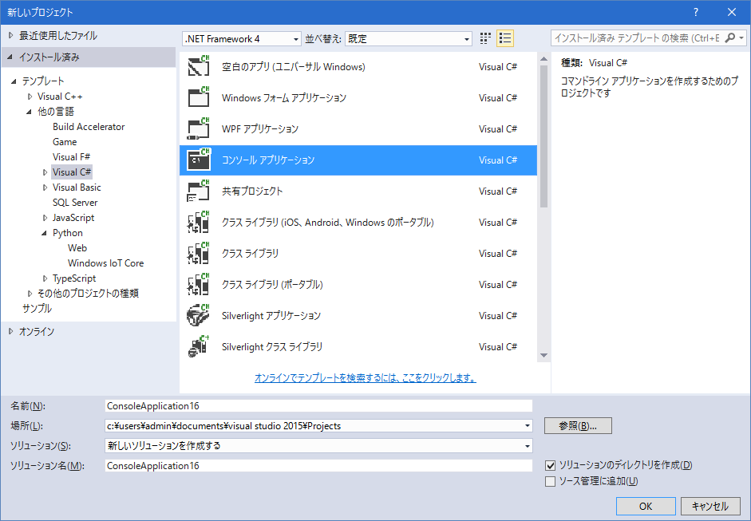
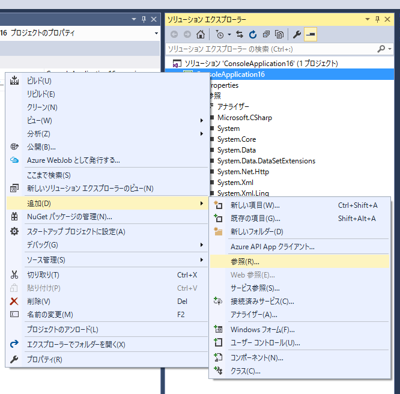
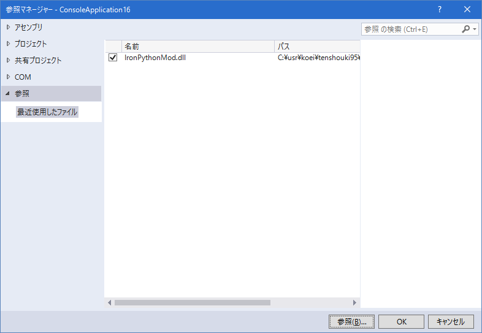

ここでは、C#からIronPythonModを利用する例を記載しています。
最終的な目的は、IronPythonをScenarioModから利用することにありますが、
IronPythonそのものはC#から利用されることを強く意識した調整がされていると言えます。
まずは、雰囲気を理解するため、IronPythonとC#の連携がいかに自然で強力であるか見てみましょう。
適当にC#のコンソールアプリケーションを作成してみましょう。
.NET FrameWorkのバージョンは、ScenarioModと合わせて4.0としておきましょう。

IronPythonMod.dllを参照に加えてください。
合体DLLですので、他のネット上のIronPythonに関する記事とは異なり、「これ１つの参照を追加するだけでOK」です。


C#のソース
using System;
using IronPython.Hosting;
namespace ConsoleApplication16
{
class Program
{
static void Main(string[] args)
{
var pe = Python.CreateEngine();
dynamic scope = pe.ExecuteFile("script.py");
// その場で式を実行。
int result32 = pe.Execute<int>("2 ** 5");
Console.WriteLine(result32);
// グローバルの関数を引数付で実行、返り値ももらう
dynamic s = scope.hello("world");
Console.WriteLine(s);
// Python側のクラスのインスタンスを作成。
dynamic foo = scope.Foo();
foo(); // __call__
foo.政治 = 97;
foo.戦闘 = 92;
foo.智謀 = 95;
foo.名前 = "武田信玄";
int result_sum = foo.method();
Console.WriteLine(result_sum);
Console.WriteLine();
// Python側のメタクラスをこっちで使ってみる
dynamic MyClass = scope.getMetaClass();
dynamic myinstance = MyClass(); // MyClassクラスのインスタンスを作成
Console.WriteLine(myinstance.my_func(5));
}
}
}
スクリプト側となるPython側のソースも用意します。
Pythonは「空白やインデント」も文法に含まれますので、注意してください。
C#から呼ばれますので、「script.pyのソースコードの文字コードをutf8」で保存してください。
(テキストエディタなどで実際に確認してください。間違っているとSyntax Errorが出ます)
IronPythonのソース:script.py
# coding: utf8
def hello( x ) :
print "hello, " + x
return "hello" + x
class Foo() :
def __init__( self ) :
print "初期化"
def __call__( self ) :
print "()付でインスタンス呼び出し"
def method( self ) :
print self.名前
return self.政治 + self.戦闘 + self.智謀
def getMetaClass() :
return type( 'MyClass', (), {'my_func' : lambda self, x : 2 ** x} )
以上となります。
C#にあるdynamicのおかげで、C#とIronPythonは、「ほぼシームレス」といって良いレベルで
「値」「関数」や「クラスそのもの」「クラスのインスタンス」の送受信が出来ています。